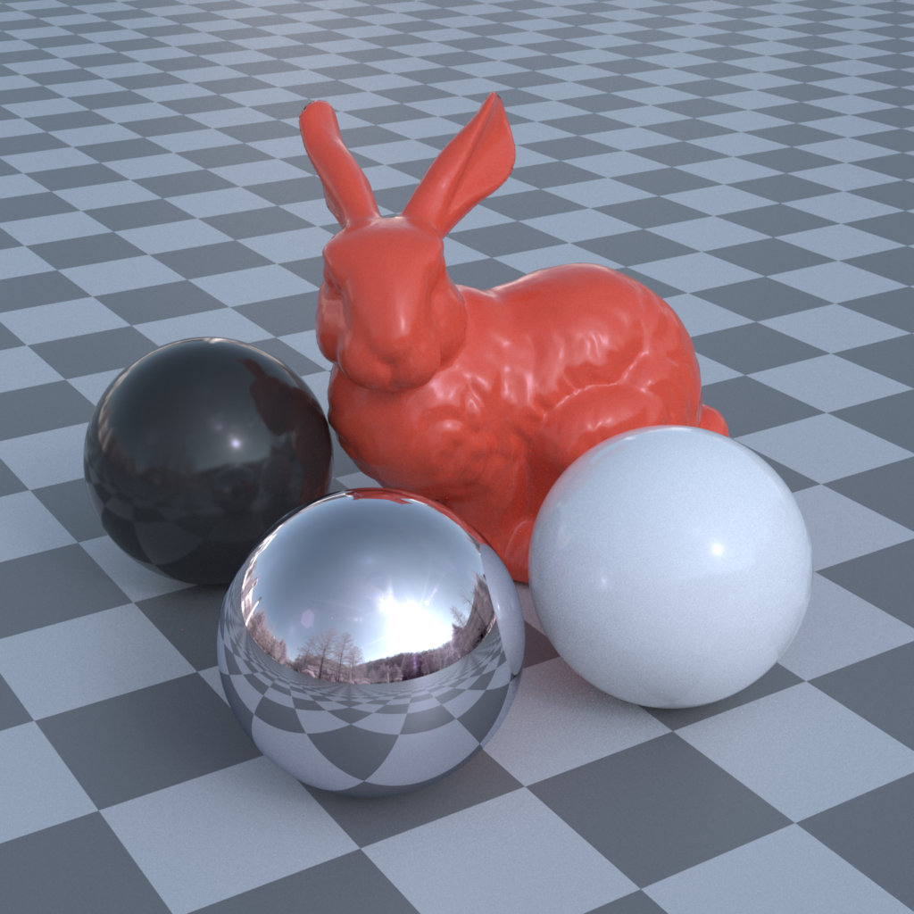

We provide full-sphere panoramas with per-pixel high-dynamic-range RGB Stokes vectors, captured across 100 diverse real-world scenes. The dataset enables the development and evaluation of polarization-based scene reconstruction and understanding under in-the-wild illumination.

Drag to rotate · Drag the divider to compare
Images could not be loaded. Please try again.
In contrast to conventional radiance-only environment maps, our polarimetric environment maps produce rendered images exhibiting spatially varying polarization effects that arise naturally from environmental lighting.
If you use our dataset or code in your research, please cite:
@inproceedings{oh2026penvmap,
author = {Oh, Yonghee and Maeda, Ryota and Moon, Yunseong and Baek, Seung-Hwan},
title = {Real-world Polarimetric Environment Map Dataset},
booktitle = {SIGGRAPH Asia 2026 Conference Papers},
year = {2026},
doi = {10.1145/3829340.3842262},
url = {https://doi.org/10.1145/3829340.3842262}
}